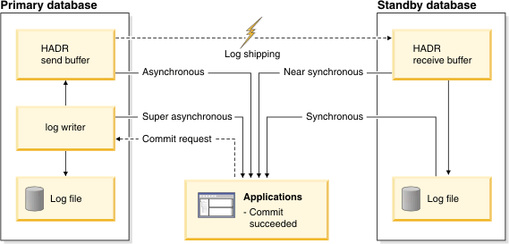

DB2 › HADR Sync Mode
Table of Contents
HADR synchronization mode is controlled by the database configuration parameter hadr_syncmode. See also High availability disaster recovery (HADR) synchronization mode
HADR provides 4 synchronization modes to suit a diverse range of operational environment. Database configuration parameter hadr_syncmode can be set to one of SYNC, NEARSYNC, ASYNC, or SUPERASYNC.
For SYNC and NEARSYNC modes, the primary will wait for an ack message from the standby to confirm that the logs have been received and written to disk on standby (SYNC mode) or have been received on the standby (NEARSYNC mode). For ASYNC mode, primary will consider replication done as soon as the logs are delivered to the TCP layer of the primary host machine. For SUPERASYNC mode, primary log writing is independent of log replication.
SYNC and NEARSYNC modes are typically used on LAN. ASYNC and SUPERASYNC modes are typically used over WAN.

SYNC mode gives best protection of data. Two on-disk copies of data are required for transaction commit. The cost is the extra time for writing on standby and sending the ack message back to primary.
In SYNC mode, logs are sent to standby only after they are written to primary disk. Log write and replication events happen sequentially. The total time for a log write is the sum of (primary_log_write + log_send + standby_log_write + ack_message). The cost of replication is significantly higher than that of other modes.
NEARSYNC mode is nearly as good as SYNC, at significantly less cost. Standby sends ack message as soon as it receives the logs in memory. Furthermore, sending logs to standby and writing logs to primary disk are done in parallel. On a fast network, log replication causes no or little overhead to primary log writing.
In NEARSYNC mode, you will lose data if primary fails and the standby fails before it has a chance to write received logs to disk. This is a relatively rare "double failure" scenario. Thus NEARSYNC is a good choice for many applications, providing near synch protection at far less performance cost.
In ASYNC mode, sending logs to standby and writing logs to primary disk are done in parallel, just like NEARSYNC mode. Because ASYNC mode does not wait for ack messages from the standby, primary system throughput is min(log write rate, log send rate). ASYNC mode is well suited for WAN application. Network transmission delay does not impact performance in this mode. But if the primary database fails, there is a higher chance that logs in transit are lost (not replicated to standby).
In SUPERASYNC mode, log writing and replication are independent. HADR never enters peer state. Log shipping only uses remote catchup state. Log writing will never be slowed down. But primary-standby log gap can grow. In a failover, data in the gap will be lost. You should monitor the gap closely. This mode provides the least impact on primary, at the cost of the least data protection. It is typically used on unreliable networks.
While in other sync modes, a non-forced takeover is allowed only in peer state, where primary and standby log positions are close, in superAsync mode, non-forced takeover is allowed in remote catchup state. If there is a large gap, the takeover will take a long time, because after stopping transactions on the primary, HADR will still need to ship all logs in the gap to the standby and replay them before takeover can complete. You need to check the gap before issuing a non-forced takeover in superAysnc mode.
You will need to consider your business needs and system performance to decide on a sync mode.
A set of tools have been created by IBM to help you make the decision. Using the combination of HADR simulator, DB2 Log Scanner, and HADR Calculator, you can preview database performance before you deploy HADR, or tuning HADR performance after you have deployed it. See HADR Performance Tuning for details